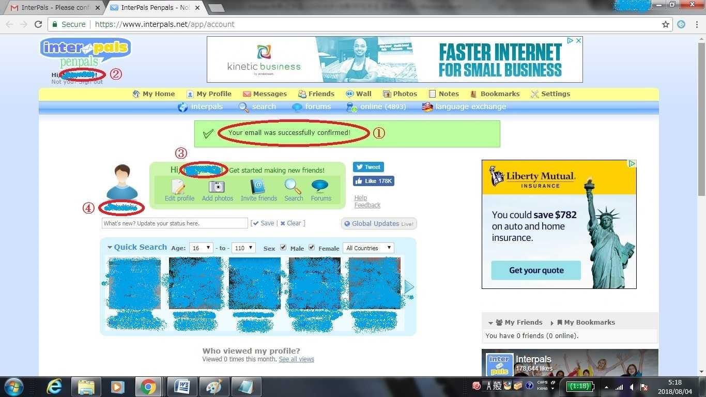
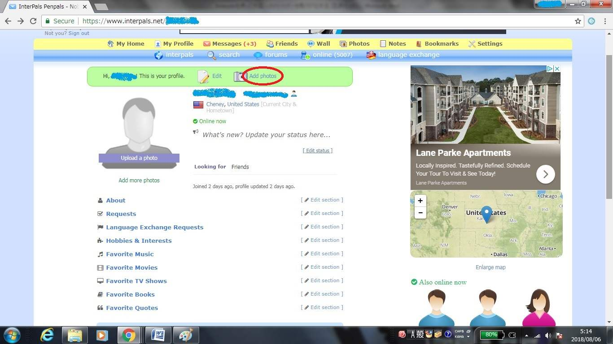
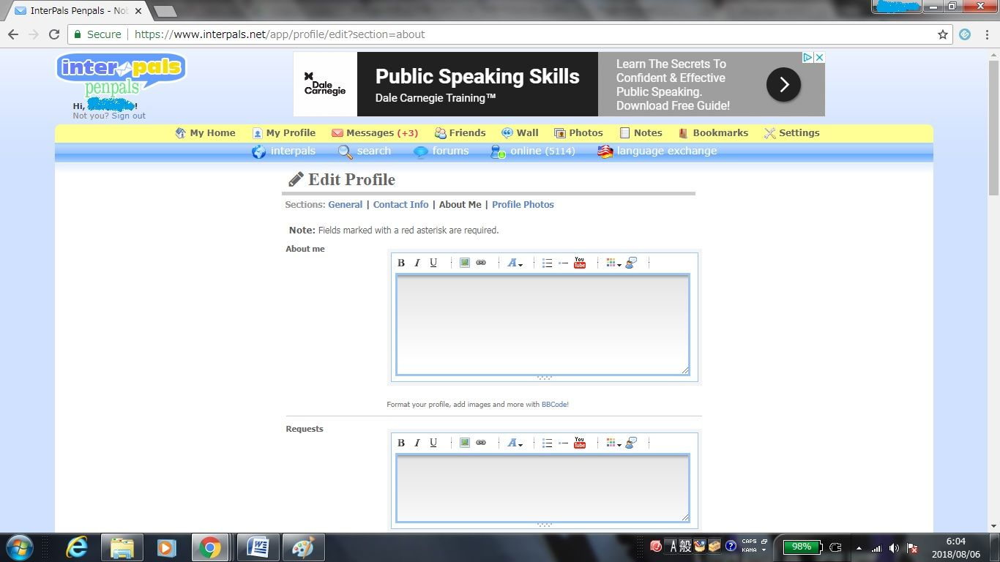
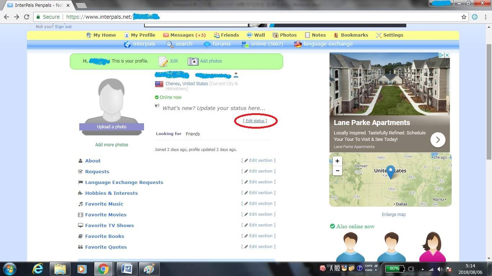
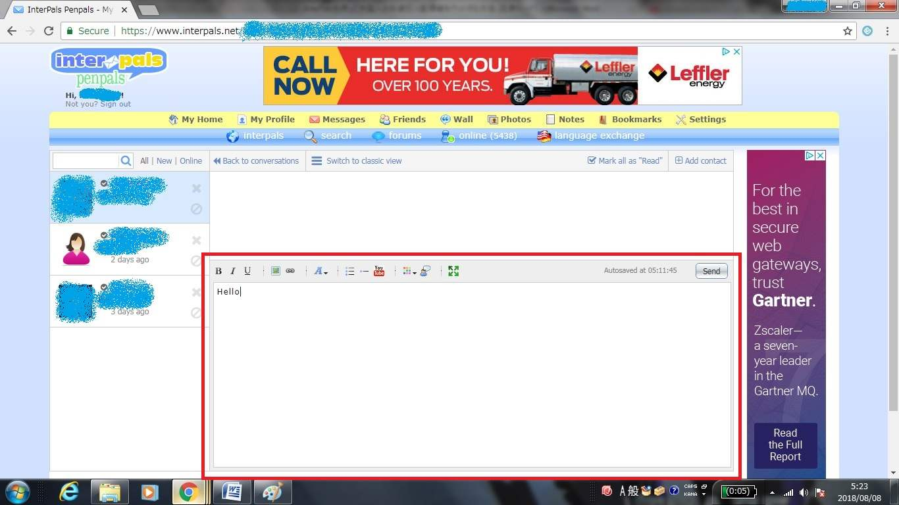

| InterPalsを使って外国人の友達/恋人/配偶者を手に入れる方法 | |
| 無限舎 | |
| (2018) | |
InterPal s を使って外国人の友 達/ 恋 人/ 配偶者を手に入れる方法
無限舎
Copyright ⓒ 2018 Mugensha All Rights Reserved.
はじめに
あなた は InterPal s というペンパルサイトを知っていますか？ペンパルサイトという言葉自体、最近使われなくなってきていますが、要はメル友を見付けるためのサイトです。日本でも最近、外国人の姿をよく見かけるようになりましたが、あなたがもし外国人の友達、恋人、配偶者など（今後まとめてパートナーと呼ぶことにします）が欲しいと思ってらっしゃるようでしたら、実 は InterPal s という完全無料のサイトを通して、比較的簡単に得ることができます。本書ではその方法を、私自らの体験を通して詳しく解説します。ただ、私は英語以外の外国語はさっぱりなので、英語圏の国のパートナーを得る方法しか解説できません。ちなみに完全無料といいつつ、実際に使ってみるとあとから様々な費用が発生してくるようなサイトがありますが 、 InterPal s は決してそのようなサイトではありませんので、どうかご安心下さい。
私自身 、 InterPal s がま だ International Penpal Pag e という名前だった１９９８年くらいから、現在の妻（アメリカ人）と出会った２０１３年の終わりくらいまで、１５年以上にわたり、このサイトを毎日のように使っていました。そしてその間、少なくとも５万人以上の外国人にメッセージを送り、実際に数百人もの外国人とペンパル（メル友）になり（その中にはアメリカの女優、ウィラ・ホランドもいます）、数十人もの外国人と遠距離恋愛をし（もちろん同時にではありません）、５人の外国人と婚約をし（もちろん同時にではありません）、最終的にそのうちの１人と結婚し、現在アメリカに住んでいます。
１５年以上もかけて、そんなにたくさんの外国人とメッセージのやり取りをしなければならないとしたら、それは決して簡単とは言えないのではないかと、あなたはおっしゃるかもしれません。私の場合、インターパルズ婚（インターパルズで出会った人との結婚）をするためにそれだけの時間と手間がかかった理由が少なくとも３つありました。その理由については本文をご覧頂ければと思います。
本書を通して得た知識を基に、あなたが実際に素敵なパートナーを得ることができたなら、著者としてとてもうれしいです 。 Enjoy InterPalling!
目 次
１０．ユーザーをブロックあるい は InterPal s に通報する方法
１． 私自身 の InterPal s 体験
私の場合、最初から外国人と結婚したいと思っていたわけではありませんでした。むしろ２８才になるまで、色んな日本人女性にアタック（死語？）したのですが、全て玉砕し、選択肢を日本人女性だけから世界中の女性へと広げることにしたのです。もともと英語と国際交流が好きだったこともあり、様々なペンパルサイトを通じて、様々な国の女性とメッセージのやり取りを始めました。
そしていつしか色んなサイトの中でも使い勝手がよく、利用者の最も多 い InterPal s 一本に絞って使うようになっていきました 。 InterPal s を通じて日本人女性にもメッセージを送ったのですが、返事が来ることはほとんどありませんでした。その一方で、なぜかアメリカ人とはすぐにメル友になることができました（今後メル友という場合、電子メールだけでな く InterPal s を通してメッセージのやり取りをする友達も含むことにします）。アメリカ人以外でも、イギリス人、オーストラリア人、カナダ人、ドイツ人などなど、様々な国の女性とメル友になりました。でも一番長続きしたのは、いつもアメリカ人でした。たいていの女性は数回メッセージのやり取りをしただけで、音信不通状態になりました。ですがアメリカ人とは、短くても数カ月は文通（今後文通という場合、郵送での手紙のやり取りではなく、インターネットを使ったメッセージやメールのやり取りを意味することとします）が続くことが多かったです。
そして「はじめに」の中で述べたように 、 InterPal s がま だ International Penpal Pag e という名前だった１９９８年くらいから、現在の妻（アメリカ人）と出会った２０１３年の終わりくらいまで、１５年以上にわたり 、 InterPal s を毎日のように使っていました。そしてその間、少なくとも５万人以上の外国人にメッセージを送り、実際に数百人もの外国人とメル友になり、数十人もの外国人と遠距離恋愛をし（同時にではありません（以下略））、５人の外国人と婚約をし、最終的にそのうちの１人と結婚しました。その中で実際に会いに行ったのは４人で、会えたのは現在の妻も含めて二人だけです。そしてそのほとんどがアメリカ人でした。メル友の中には他の国の女性もいましたが、ほとんどがアメリカ人でしたし、遠距離恋愛をしたのは、カナダ人１人を除き全員アメリカ人で、婚約をしたのも結婚をしたのも全員アメリカ人でした。
私の個人的な意見ですが、ほとんどのアメリカ人はフレンドリーでおおらかな性格をしており、ちょっとしたことですぐに関係を絶ったりしないので、文通も関係も長続きする傾向があると思います。ですので、もしあなたがアメリカ人のパートナーを探しているなら、それだけで有利と言えるでしょう。
とはいえ、私の心をズタズタに引き裂いたのもアメリカ人でした。例えばアラバマ州に住む２０才のアメリカ人女性と遠距離恋愛だけで婚約までして、婚約指輪も送った後に、親が反対しているという理由でふられ、その後しばらくしてその女性からメールが来て、今度こそ親が何と言おうと私と結婚するから信じてくれと言われて、信じてアメリカに移住する準備を進めていたら、突然音信不通になりました。またコロラド州に住むあるアメリカ人女性としばらく遠距離恋愛をした後、二人で見付けたアパートに一緒に住むため、実際にコロラド州に行ったら、彼氏ができていて、しかもその男の子供を妊娠していました。またカリフォルニア州に住むあるアメリカ人女性と４年近くにわたり遠距離恋愛をし、その間婚約指輪やお金を含めて様々な物をお互いに送り合い、長いメールのやり取りを毎日のようにして、実際に２度も会いに行ったのですが、２度とも会ってくれさえしませんでした。このように、遠距離恋愛には様々な障害や失敗が付き物です。期待し過ぎるとうまくいかなかった時のショックが大きくなりますし、期待しなさ過ぎると熱意の無さ、冷めてる感じが相手に伝わったりします。ほどほどの期待で、折れない心で頑張りましょう。
「はじめに」で述べたように、私が現在の妻と出会うために、１５年以上の歳月を費やし、５万人以上の女性にメッセージを送るなど、膨大な時間と手間がかかりました。そしてそれには少なくとも３つの理由があったのですが、ここではその理由についてお話したいと思います。
まず１つ目の理由として、年齢が高過ぎたことがあげられます 。 InterPal s を使い始めた時、私は年齢がすでに２６才を過ぎており、英語での文通に慣れた頃にはすでに３０才になっていました 。 InterPal s の利用者のほとんどが１０～２０代の若い人達で、３０才過ぎの外国人男性と結婚したいと思ってくれる若い女性（私は２０才代の女性を探していました）は、めったにいませんでした。そしてさらに年を取るにつれ、若い女性のメル友を得ることすらどんどん難しくなっていきました。なぜならメッセージの送信者の年齢を見て、例えば３０代とかだと、開封すらせずに削除する若い女性はたくさんいるからです。
２つ目の理由として、経済的なものがあげられます。当時私は派遣社員として働いており、収入が少なかったせいで、ちょくちょく相手の国に会いに行くだけのお金がありませんでした。普通はまず実際に会って、初めて交際が始まるものですが、そうするだけの経済力が当時の私には無かったため、メッセージのやり取りだけで婚約まで持って行って、実際に会いに相手の国に行くのは、相手と結婚して一緒に住むために一回だけ、というのが目標でした。ですが一度も実際に会ったことすらない相手と、遠距離恋愛ならまだしも、婚約など誰がするでしょうか？
３つ目の理由として、私が相手の国に住みたいと思っていたことがあげられます。相手の国に住みたいと言っただけで、永住権目的で近づいてきているのではないかと警戒されたものです。特にアメリカでは、グリーンカード（永住権）目的で、外国人がアメリカ人と結婚するケースがたくさんあり、アメリカ人は特に警戒心が強くなっています。
もしあなたが２０代（できれば前半）で、正社員としてボーナスの出る会社で働いており、相手の女性と日本で結婚して暮らすつもりだったら、そんなに膨大な時間と手間をかけることなく、外国人の妻を得ることができるはずです。あるいはその条件のうち一つでも満たすなら、少なくとも私よりは時間も手間もかけずにパートナーを得られる可能性が高くなるでしょう。またあなたが欲しているのが、結婚相手や恋人などではなくただの友達なら、さらに少ない時間と手間で得ることができるでしょう。
外国人のパートナーは欲しいけど、英語が・・・という方はたくさんいらっしゃるでしょう。確かに英語力は高ければ高いほど、相手と色んな話ができますし、お互いをより深く知ることができるので、高いに越したことはないと思います。ちなみに私がペンパルサイトを使い始めた頃、すでに英検準一級レベルの英語力がありました。
ですが日本に興味を持っている外国人は多いので、日本のことや日本語を教えてあげる代わりに英語を教えてもらうという関係から始めることもできると思います。また相手の方と日本で結婚し、日本に住むつもりなら、むしろその相手の方が日本語を話せるようになることの方が、あなたが英語を話せるようになることよりも重要になってきます。とはいえ、相手が日本語を話せる方でない限り、初めはやはり英語で文通することになると思いますから、英語の勉強はできるだけ頑張った方がいいでしょう。そしてできれば英検二級レベルの英語力はつけましょう。
InterPal s では、写真を見ながらメッセージを送る相手を決められるので、私の場合、好みの女性の写真を見て鼻の下を伸ばしながら、英語のメッセージを書いていました（笑）。よって英語の勉強も、英語でメッセージを書くことも、全く苦ではありませんでした。そんなことも英語の勉強を続けるためのモチベーションになるのです。
読者の中には、文法ミスの無い、完璧な英語のメッセージを書かなければならないと思っている方も結構いらっしゃるでしょうが、そんなことは全くありません。最初のうちは多少デタラメな英語でも、言いたいことが相手に通じればよいのです。英語を母国語とする人達（ネイティブスピーカー）でさえ、文法ミスをたくさんします。あまりにもめちゃくちゃな英語なので、英語を母国語としない国から来た移民の女性かと思ったら、実は英語のネイティブスピーカーだった、なんてこともありました。私の場合、初めのうちは何を書いてよいかわからず、英語の例文集を２冊購入し、その中の例文を参考にしながら英語のメッセージを書いていました。
相手に自分の言いたいことが通じるようになったら、文法ミスを直してもらうよう、頼んでみたらどうでしょうか？もし相手が日本語を勉強していたら、相手の日本語を直してあげることにすれば、公平になります。あるいはもしあなたが外国人の恋人や結婚相手を探しているなら、そうした外国人とは別に、英語の上達を手助けしてもらうためだけに、外国人のメル友を得るのもよいでしょう。日本語の上達を手助けしてくれる日本人を探している外国人は結構いるので、そうした外国人とメル友になり、英語の上達を手助けしてもらう代わりに、日本語の上達を手助けするのです。
外国人のパートナーを探し始める心の準備ができたら、いよい よ InterPal s を使い始めるわけですが、その前に注意すべきことについてお話します 。 InterPal s は完全無料ということもあり、様々な人が利用しています。その中には相手からお金を盗むことを目的にしている詐欺師達がいます。彼らは主に男性をターゲットにしており、美しい女性の（セクシーな）写真を使って男達を引き寄せ、送金や個人情報などを要求してきます。そしてほとんどの場合、彼らは美しい女性になりすましているだけで、実際は男である場合が多いのです。
彼らは大抵、現在何らかの苦境に立たされており、お金が必要だと言ってきます。そして送金先の情報を送りつけてきて、そこに送金してくれと言ってきたり、クレジットカード番号などの個人情報を教えてくれと言ってきたりします。いきなりそんなことを頼まれても、実際に送金したり情報を教えたりする人は少ないと思いますが、中には数ヶ月、あるいは一年以上にわたってごく普通の文通をし、相手の信用を得てから初めてそうしたことを要求してくる詐欺師達もいます。そしてすっかり仲良くなった友達（あるいは恋人）が困っているのだから、助けなければという気になり、実際に送金したり個人情報を教えてしまう人もいるのです。
そこで注意して頂きたいのですが、どんなに長く文通をした相手であっても、あるいは文通だけでなく、ビデオチャットをしたり、実際に何らかの物をお互いの住所に送り合った仲であっても、もし相手がお金や個人情報を要求してきたら、例えどんな理由があろうとも、決して送金したり個人情報を教えたりしないで下さい。Ｅメールアドレスも信用できる相手にしか教えないで下さい。悪用されたりスパムメールを送られたりする可能性があります。私も１５年以上にわた り InterPal s を使いましたが、様々な詐欺師たちに出会いました。例えば数ヶ月もの間、ごく普通の会話をして、お互いのことを理解し合えてきたなあと思い始めた頃に、突然経済的に困難な状況にあると言われ、送金を要求されたことがあります。あるいは今仕事でナイジェリアに来ていて、お金もパスポートも全て盗まれ、自分の国に帰れなくなったからお金を送って助けて欲しいと言われたりもしました。私は現地の警察に届けるか、現地の領事館に駆け込んで助けてもらいなさいと言って、それ以降無視しました。あなたに今すぐ会いたいと言われ、会いに行くから航空券代を貸してくれと言われたこともあります。会った時にお金は返すからとも言われました。絶対に送金しないで下さい。
ちなみに詐欺師達 の InterPal s 上のプロフィールには以下のような特徴がありますので、参考にして下さい。
①セクシーな写真をプロフィールに使っている
②プロフィールの自己紹介欄に恋人を探していると書いてある
③自己紹介欄の内容が甘ったるいほどロマンチック
④英語圏の国の人なのに英語が不自然あるいはデタラメ
⑤プロフィールの下の 「 wal l 」欄（コメント欄のようなもの）に、その人 が Scamme r （詐欺師）だと書き込んでいる人がいる
上記の特徴を持つプロフィールが全て詐欺師のものだというわけではありませんが、そのようなプロフィールを見かけたら、詐欺師の可能性が高いと思って注意して頂くとよいと思います。またプロフィール上にはセクシーな写真を使っていなくても、メッセージを送るとセクシーな写真を送ってくる詐欺師もよくいます。④については、例えばアメリカのある州に住んでいる女性がいて、英語がデタラメだった場合、どこの州に住んでいるのか聞くと、ほとんどの場合、自分の住んでいる州なのにもかかわらず、正しく答えられませんでした。そして私が問い詰めると、実はアフリカ（特にナイジェリア）に住んでいると答えた詐欺師達が多かったです。
こんな話をすると 、 InterPal s を使うことに不安を感じるかもしれませんが、まずは鉄則としてたった一つのことを厳守して下さい。相手がどんなことを言ってこようと、どんなに親しくなった（とあなたが感じている）相手であろうと、絶対に送金したり重要な個人情報（クレジットカード番号など）を与えないこと！それだけです。
相手と親しくなってくると、写真のやり取りや、郵送でのプレゼントの贈り合いなどをすることも出てくるでしょう。その際も、細心の注意を払い、できれば実際に会ったことのない相手とは、郵送での物の贈り合いは避けた方がよいでしょう。それもできれば相手に先に送らせて、それがちゃんと自分の所に届いてから、初めて相手に物を送るようにしましょう。もし実際に会うのが難しければ、少なくともビデオチャットを何年も続けて、本当に信頼できる相手だと確信できる場合のみにしましょう。そして第三者に見られたくない写真や、住所、電話番号といった個人情報は、本当に必要な時に必要最小限の量だけ与えるようにしましょう。
１． アカウントの作り方
それではいよい よ InterPal s の使い方をご説明します。まずはあなたのアカウントを作りましょう 。 InterPal s のホームページ （ https://www.InterPals.net / ）にアクセスして下さい。すると以下のような画面が表示されます（写真や個人情報は全て青で塗りつぶしてあります（以下略））。
赤丸で囲んだ所を見て下さい。サインインする方法にはフェイスブックのアカウントを使う方法と 、 InterPal s のアカウントを作成し使う方法の２つがあります。ですがフェイスブックのアカウントを使うと、自分のフェイスブックの情報を見られてしまうという話を聞いたことがあるので、面倒くさがらず に InterPal s のアカウントを作成しましょう。まずは以下の項目を入力します。
① 「 First Nam e 」：あなたの下の名前。
② 「 Emai l 」：あなたのメールアドレス。
③ 「 Birthda y 」： 「 Da y 」に生年月日の日を、 「 Mont h 」に生年月日の月を、 「 Yea r 」にあなたの生年月日の年を選択入力。
④ 「 I am Female Mal e 」：あなたが女なら 「 Femal e 」の左横の○をクリックし、あながた男なら 「 Mal e 」の左横の○をクリック。
それが終わったら 「 Sign U p 」をクリックして下さい。すると以下の画面が表示されます。
赤丸で囲んだ所を見て下さい。以下の項目を入力します。
① 「 Usernam e 」：ユーザー名を決めて半角英数字で入力して下さい。
② 「 Passwor d 」：パスワードを決めて半角英数字で入力して下さい。
③ 「 Cit y 」：現住所の「市あるいは都道府県」と「国」を 「[ 市あるいは都道府 県 ], [国] 」の形式で、 「 Tokyo, Japa n 」のように入力して下さい。
④ 「 Hometow n 」：出身地の「市あるいは都道府県」と「国」を 「[ 市あるいは都道府 県 ], [国] 」の形式で、 「 Tokyo, Japa n 」のように入力して下さい。
それが終わったら、 「 I'm not a robo t 」の左横の□をクリックして、 「 Continu e 」をクリックします。すると以下の画面が表示されます。
①の赤丸の中にはあなたのユーザー名が、②の赤丸の中にはあなたのメールアドレスが表示されます。そしてあなたのメールアドレス宛てに、以下のような確認のメールが届きます。
赤丸で囲んだ 「 Click to Confirm Your Emai l 」をクリックして下さい。すると以下の画面が表示されます。

①の 「 Your email was successfully confirmed ! 」というメッセージが表示されていれば、無事アカウントが作成されたことになります。②、③、④の赤丸で囲んだ所には、あなたのユーザー名が表示されているはずです。これ で InterPal s を使う準備が整いました。
アカウントを作ったら、次はあなたのプロフィールを作成しましょう 。 InterPal s にサインインすると、最初に以下のような画面が表示されます。
赤丸で囲んだ所に 「 My Profil e 」というリンクがあるので、それをクリックして下さい。そうすると以下の画面が表示されます。ここにあなたのプロフィールが表示されます。
赤丸で囲んだ 「 Edi t 」をクリックすると、以下の画面が表示されます。
見て頂くとわかりますが、ほとんどの項目はすでに入力されています。ここでは以下の項目を追加入力できます。
① 「 Languages I spea k 」：あなたが話す言語とそのレベルを選択入力します。
② 「 Languages I'm learnin g 」：あなたが学んでいる言語とそのレベルを選択入力します。
③ 「 Looking fo r 」：あなたが探しているもの、あるいは相手の外国人とどんな関係を望むかを選択入力します。
④ 「 Educatio n 」：あなたの学歴について入力します。
⑤ 「 Occupation or Jo b 」：あなたの仕事について入力します。
⑥ 「 Relationship statu s 」：あなたについて、恋人の有無や未婚か既婚かなどの情報を入力します。
以上のうち、①と③は必須入力となっているので、それらについて説明します。まずは①の 「 Languages I spea k 」です。以下の画面を見て下さい。
赤で囲んだエリアの 「 + add a languag e 」をクリックすると、以下の画面が表示されます。
「 Choose Languag e 」の▼をクリックして、あなたが話す言語を選択して下さい。さらに右の 「 Select Your Leve l 」の▼をクリックして、あなたが話す言語のレベルを入力して下さい。レベルは 「 Native Speake r ：ネイティブスピーカー（母語話者）レベル」、 「 Fluen t ：流暢なレベル」、 「 Advance d ：上級レベル」、 「 Intermediat e ：中級レベル」、 「 Beginner/Elementar y ：初級レベル」の中から選びます。
続いて③の 「 Looking fo r 」です。以下の画面の赤で囲んだエリアを見て下さい。
ここではあなたが探しているもの、あるいは相手の外国人とどんな関係を望むかを選択入力します。選択肢には 「 Friend s ：友達」、 「 Postal pen pal s ：郵送で手紙のやり取りをする昔ながらのペンパル」、 「 Language practic e ：外国語の練習相手」、 「 Flirting and romanc e ：恋人」、 「 Meeting in perso n ：実際に会う相手」があります。該当するものを全てクリックし、チェックを入れましょう。例えば友達も恋人も探しているなら、 「 Friend s 」と 「 Flirting and romanc e 」の両方にチェックを入れます。そうすると、あなたと同じように 「 Friend s 」と 「 Flirting and romanc e 」を探している外国人のみが検索されます。入力が終わったら、以下のように画面の一番下に 「 Save Change s 」というボタンがあるので、忘れずにクリックして内容を保存しましょう。
それではプロフィール画面に戻りましょう。

赤丸で囲んだ 「 Add photo s 」をクリックすると、好きな写真を何枚もアップロードできますが、特に必要の無いことなので、説明は割愛させて頂きます。
赤丸で囲んだ所を見て下さい。ここにあなたの写真を載せることができます。もし悪用されることが心配なら、あなた以外の写真（例えば動物や植物など）を利用するとよいでしょう。ただしその際、著作権侵害にならないよう、著作権フリーの画像などを利用して下さい。ちなみに写真を全くアップロードしなくても構いません。アップロードをするには赤丸で囲んだ所をクリックします。すると以下の画面が表示されます。
赤丸で囲んだ 「 Add file s 」をクリックして、好きな写真を選択しアップロードします。右隣の 「 OR Drop files her e 」のエリアに写真をドラッグ＆ドロップしてもアップロードできます。ただし公序良俗に反する画像や、著作権侵害に当たる有名人の写真などをアップロードをするのはやめましょう。
プロフィール画面に戻ります。以下の赤で囲んだ所を見て下さい。
ここにはあなた自身について、上から順に以下の内容を入力します。
① 「 Abou t 」：自己紹介文を書きます。
② 「 Request s 」：要望があれば書きます。
③ 「 Language Exchange Request s 」：相手に日本語を教える代わりに相手の言語を教えてもらう上で、何か要望があれば書きます。
④ 「 Hobbies & Interest s 」：趣味や興味のあることについて書きます。
⑤ 「 Favorite Musi c 」：好きな音楽について書きます。
⑥ 「 Favorite Movie s 」：好きな映画について書きます。
⑦ 「 Favorite TV Show s 」：好きなテレビ番組について書きます。
⑧ 「 Favorite Book s 」：好きな本について書きます。
⑨ 「 Favorite Quote s 」：好きな言葉について書きます。
少なくとも 「 Abou t 」と 「 Hobbies & Interest s 」だけは書きましょう。実際に書くには、それぞれの項目の右にある 「 Edit sectio n 」をクリックします。すると以下の同じ画面が表示されます。

該当する四角の中に、英語で入力して下さい。それが終わったら、以下のように画面の一番下に 「 Save Change s 」というボタンがあるので、忘れずにクリックして内容を保存しましょう。
ここで実は一つだけ例外があって、プロフィール画面の 「 Language Exchange Request s 」という項目については、 「 Edit sectio n 」をクリックすると以下の画面が表示されます。
赤で囲んだエリアの 「 + add a languag e 」をクリックすると、以下の画面が表示されます。
「 Choose Languag e 」の▼をクリックして、あなたが学んでいる言語を選択して下さい。さらに右の 「 Select Your Leve l 」の▼をクリックして、あなたが学んでいる言語のレベルを入力して下さい。レベルは 「 Beginner/Elementar y ：初級レベル」、 「 Intermediat e ：中級レベル」、 「 Advance d ：上級レベル」の中から選びます。さらに先程自己紹介文を書いた、以下の画面をもう一度見て下さい。
赤で囲んだ 「 Language Exchang e 」というエリアの四角の中に、相手に日本語を教える代わりに相手の言語を教えてもらう上で、何か要望があれば書きます。その後で、必ず 「 Save Change s 」ボタンをクリックして内容を保存します。
最後に以下の画面の赤丸で囲んだ所を見て下さい。

この 「 Edit statu s 」というリンクをクリックすると、ステータスを入力する小さなボックスが現れます。そこにあなたのステータスを入力して、 「 Sav e 」というリンクをクリックすると、それをプロフィール画面に表示することができます。私はここに旅行に行く時や忙しい時など、返事をすぐに書けない時に、「旅行で○月○日まで返事が書けません」や「すごく忙しいので一週間ほど返事が書けません」などと連絡事項を（もちろん英語で）書いていました。
プロフィールを作成したら、次に様々な設定をします。
以下の画面の赤丸で囲まれた所を見て下さい。
赤丸で囲んだ 「 Edi t 」というリンクをクリックすると、以下の画面が表示されます。赤丸で囲んだ所を見て下さい。
この 「 Contact Inf o 」というリンクをクリックすると、以下の画面が表示されます。
ここではあなた の Skype I D やあなたのブログ 、 Myspac e、 Faceboo k といったウェブサイト の UR L を入力することができます。
自分のアカウントを表示するには、以下の画面の赤丸で囲んだ 「 My Profil e 」をクリックします。
以下の画面の赤丸で囲んだ所を見て下さい。
この 「 Setting s 」というリンクをクリックすると、以下の画面が表示されます。
ここでは、メールアドレスやパスワードを変更したり、自分の住んでいる所のタイムゾーンを変更することができます。変更したら必ず 「 Save Change s 」ボタンをクリックして、変更を保存しましょう。
「 Privac y 」というリンクをクリックすると、以下の画面が表示されます。
ここでは以下の設定ができます。
① 「 Accept messages fro m 」：あなたにメッセージを送れる人を設定します。 「 InterPals Member s： InterPal s のメンバー」、 「 My Friend s： InterPal sで Friend s 登録した友達」、 「 No on e ：誰もあなたにメッセージを送れない」の中から選びます。
② 「 Age/sex/location limit s 」：性別、年齢、大陸によって、あなたにコンタクトできる人を限定します。性別は 「 Males & Female s ：男性と女性」、 「 Males onl y ：男性のみ」、 「 Females onl y ：女性のみ」の中から選択します。年齢は下限と上限を選択入力します。大陸はアフリカ大陸、アジア大陸、ヨーロッパ大陸、北アメリカ大陸、オーストラリア／オセアニア大陸、南アメリカ大陸の中から選択し、左の□にチェックを入れます。
③ 「 Blocked Countrie s 」：国を指定して、その国の人からのコンタクトを一切拒否できます。ちなみにアメリカは 「 Americ a 」ではなく 「 United State s 」となっており、イギリスは 「 Englan d 」ではなく 「 United Kingdo m 」となっています。
④ 「 Available for chat wit h 」 ： InterPal s インスタントメッセンジャーを通してあなたにチャットメッセージを送れる人を設定します。 「 InterPals Member s： InterPal s のメンバー」、 「 My Friend s： InterPal sで Friend s 登録した友達」、 「 No on e ：誰もあなたにチャットメッセージを送れない」の中から選びます。
⑤ 「 Write on my wal l 」：あなたのプロフィール の Wal l に書き込みができる人を設定します。 「 InterPals Member s： InterPal s のメンバー」、 「 My Friend s： InterPal sで Friend s 登録した友達」、 「 Only M e ：自分だけ」の中から選びます。
⑥ 「 View my wal l 」：あなたのプロフィール の Wal l を読むことができる人を設定します。 「 Everyon e ：誰でも」、 「 InterPals Member s： InterPal s のメンバー」、 「 My Friend s： InterPal sで Friend s 登録した友達」、 「 Only M e ：自分だけ」の中から選びます。
⑦ 「 Blocked user s 」：あなたにメッセージを送ったり、あなた の Wal l に書き込んだりして欲しくないユーザーを登録することができます。 「 Edit blocked lis t 」をクリックするとボックスが表示されるので、その中にブロックしたいユーザー名をコンマで区切って入力します。
⑧ 「 View Instant Messenge r 」：あなた の Skyp e や様々なメッセンジャー の I D を見ることのできる人を設定します。 「 Everyon e ：誰でも」、 「 InterPals Member s： InterPal s のメンバー」、 「 My Friend s： InterPal sで Friend s 登録した友達」、 「 Only M e ：自分だけ」の中から選びます。
⑨ 「 View My Friend s 」：あなた の Friend s リストを見ることのできる人を設定します。 「 Everyon e ：誰でも」、 「 InterPals Member s： InterPal s のメンバー」、 「 My Friend s： InterPal sで Friend s 登録した友達」、 「 Only M e ：自分だけ」の中から選びます。
⑩ 「 Display my profile in searche s 」：あなたのプロフィール が InterPal s ユーザーに検索され、検索結果に表示されるのが嫌なら、このチェックを外すことで検索されなくなります。
⑪ 「 Receive friend request s 」：フレンドリクエストを受け取りたくない場合は、このチェックを外します。
⑫ 「 Only people I have contacted can add me to friend s 」：ここにチェックが入っていると、あなたがメッセージを送ったり 、 Wal l に書き込みをしたり、写真やノートにコメントを書いた人だけが、あなたにフレンドリクエストを送れるようになります。
⑬ 「 Exclude my profile from search engine s 」：ここにチェックを入れると 、 Googl e などのサーチエンジンがあなたのプロフィールを検索対象から外すようになります。ですがそうならない可能性もありますし、そうなるまでに数日から数週間かかることもあります。
設定を変更したら、必ず 「 Save Change s 」ボタンをクリックして、変更を保存しましょう。
「 Notification s 」というリンクをクリックすると、以下の画面が表示されます。
ここでは何らかのイベントが発生した時に、赤丸で囲んだメールアドレスに通知を送ってもらうことができます。メールアドレスを変更する場合は右の 「 chang e 」をクリックして変更します。
① 「 New message s 」：ここにチェックが入っていると、誰かがあなたにメッセージを送るたびに、赤丸で囲んだメールアドレスに通知が送られます。
② 「 Wall post s 」：ここにチェックが入っていると、誰かがあなた の Wal l に書き込みをするたびに、赤丸で囲んだメールアドレスに通知が送られます。
③ 「 Friend request s 」：ここにチェックが入っていると、誰かがあなたにフレンドリクエストを送るたびに、赤丸で囲んだメールアドレスに通知が送られます。
④ 「 Photo comment s 」：ここにチェックが入っていると、誰かがあなたの写真にコメントを書くたびに、赤丸で囲んだメールアドレスに通知が送られます。
⑤ 「 Note comment s 」：ここにチェックが入っていると、誰かがあなたのノートにコメントを書くたびに、赤丸で囲んだメールアドレスに通知が送られます。
⑥ 「 Reminder s 」：ここにチェックが入っていると、あなたが数週間サインインしていないと、新しいメッセージやフレンドリクエスト、あなたのプロフィールを見たユーザーなどについてのリマインドが、赤丸で囲んだメールアドレスに送られます。
⑦ 「 On-Site Notification s 」：ここにチェックが入っていると、あなたがサインイン中に、誰かがあなたにメッセージを送ったり、あなたの友達がサインインしたり、誰かがあなた の Wal l に書き込んだりあなたの写真やノートにコメントを書いたりするたびに、通知が表示されます。
設定を変更したら、必ず 「 Save Change s 」ボタンをクリックして、変更を保存しましょう。
もしあなた が InterPal s のアカウントそのものを削除したい場合は、以下の画面の赤丸で囲んだ 「 Delete accoun t 」をクリックします。
ただしアカウントを作ってから一週間は、詐欺行為防止のため削除できないようになっています。
それでは早速外国人のプロフィールを検索してみましょう ！ InterPal s にサインインすると、最初に以下のような画面が表示されます。
赤丸で囲んだ所に 「 searc h 」というリンクがあるので、それをクリックして下さい。そうすると以下の画面が表示されます。
赤丸で囲んだ所を見て下さい。ここで検索したい外国人の年齢の幅を選択入力します。例えばあなたが２０才～３０才の外国人を検索したいなら、左の▼をクリックして「２０」を選択し、右の▼をクリックして「３０」を選択します。次に以下の画面の丸で囲んだ所を見て下さい。
ここではあなたが検索したい外国人の性別を選択します。例えばあなたが女性の外国人だけを検索したいなら、 「 Femal e 」の左の□にだけチェックが入っている状態にする必要があります。よって 「 Mal e 」の左の□をクリックして、 「 Mal e 」のチェックを外します。次に以下の画面の丸で囲んだ所を見て下さい。
あなたがもし写真を載せている外国人だけ検索したいなら、この 「 With photo onl y 」の□をクリックしてチェックを入れます。私はいつもここにチェックを入れていました（笑）。次に以下の画面の丸で囲んだ所を見て下さい。
あなたがもし現在オンラインになっている、つま り InterPal s の画面を開いて使っている外国人だけ検索したいなら、この 「 Online onl y 」の□をクリックしてチェックを入れます。ただし、もしあなたに英語でチャットをする自信が無いなら、やめておいた方がいいかもしれません。オンラインになっている外国人にメッセージを送ると、すぐに返事が返って来る可能性があります。そしてあなたがオンラインであることは相手にも見えます。あなたがオンラインのまま、相手のメッセージに返信しないでいると、あなたがもうその相手に興味が無いのだと思われて、後で返事を出しても相手から返事が来なくなったりします。そしてそれを避けるため、あなたがすぐに返事を出した場合、相手もすぐに返事を出してくる可能性があります。よって英語でチャットをするような状態になりかねないのです。次に以下の画面の丸で囲んだ所を見て下さい。
この 「 Countrie s 」というエリアでは検索したい外国人の国を選択することができます。▼をクリックして、どこの国の外国人を検索したいか選びます。ちなみにアメリカは 「 Americ a 」ではなく 「 United State s 」となっており、イギリスは 「 Englan d 」ではなく 「 United Kingdo m 」となっています。もし２つ以上の国の外国人を同時に検索したい場合は、 「 + Add another countr y 」という所をクリックすると、もう一つ国を選べるようになります。次に以下の画面の丸で囲んだ所を見て下さい。
この 「 Cit y 」という所には、検索したい外国人が住んでいる都市名を入力します。例えば 「 Los Angele s 」と入力すると、以下の画面の丸で囲んだ所のように、候補がリストで表示されるので、その中から該当する都市を選択します。

次に以下の画面の丸で囲んだ所を見て下さい。
この 「 Continent s 」という所では検索したい外国人が住んでいる大陸を選択します。上から順に、アフリカ大陸、アジア大陸、ヨーロッパ大陸、北アメリカ大陸、オーストラリア／オセアニア大陸、南アメリカ大陸となっています。デフォルトでは全ての大陸にチェックが入っていますが、国を選択すると全てのチェックが自動的に解除されます。国や都市名を入力するのでしたら、ここは特にいじらなくてもよいでしょう。次に以下の画面の丸で囲んだ所を見て下さい。
この 「 Language s 」という所では検索したい外国人が話す言語を選択します。例えばどこの国の人でもいいから、とにかく英語を話す人と友達になりたいなどという場合、ここで 「 Englis h 」を選択します。あるいは国や都市と合わせて指定すると、それらの国や都市の中で、その言語を話す外国人だけを検索できます。もし２つ以上の言語を選択したい場合は、 「 + Add a countr y 」という所をクリックすると、もう一つ言語を選べるようになります。次に以下の画面の丸で囲んだ所を見て下さい。
この 「 Show native speakers onl y 」の左にある□をクリックしてチェックを入れることで、そのすぐ上であなたが選択した言語のネイティブスピーカー、つまりその言語を母国語とする外国人だけを検索することができます。次に以下の画面の丸で囲んだ所を見て下さい。
この 「 Learning a language I spea k 」の左にある□をクリックしてチェックを入れることで、あなたが話す言語を学んでいる外国人を検索することができます。次に以下の画面の赤丸で囲んだ 「 Looking Fo r 」というエリアを見て下さい。

この 「 Looking Fo r 」という所ではあなたが探しているもの、あるいは相手の外国人とどんな関係を望むかを選択入力できます。選択肢には 「 Postal pen pal s ：郵送で手紙のやり取りをする昔ながらのペンパル」、 「 Language practic e ：外国語の練習相手」、 「 Friend s ：友達」、 「 Meeting in perso n ：実際に会う相手」、 「 Flirting and romanc e ：恋人」があります。該当するものを全てクリックし、チェックを入れましょう。例えば友達も恋人も探しているなら、 「 Friend s 」と 「 Flirting and romanc e 」の両方にチェックを入れます。そうすると、あなたと同じように 「 Friend s 」と 「 Flirting and romanc e 」を探している外国人のみが検索されます。次に以下の画面の丸で囲んだ所を見て下さい。
この 「 Keyword s 」という所には検索キーワードを入力することができます。次に以下の画面の丸で囲んだ所を見て下さい。
この 「 Sor t 」という所では検索結果をどのような順に並べるか指定します。▼をクリックすると以下のようなメニューが出てきます。
このメニューの中から、 「 Newest Firs t ：新しいユーザーの順」、 「 Last Logi n ：最近ログインしたユーザーの順」、 「 Last Modifie d ：最近プロフィールを変更したユーザーの順」のどれかを選択します。次に以下の画面の丸で囲んだ所を見て下さい。
この 「 Usernam e 」という所に相手のユーザー名を入力し、ユーザー名で検索することができます。次に以下の画面の丸で囲んだ所を見て下さい。
検索条件を設定したら、この 「 Searc h 」ボタンをクリックすることで検索を実行します。左下の 「 Save setting s 」の左の□にチェックが入っていると、検索条件が保存されるので、毎回同じ検索条件を設定しなくてもよくなります。逆に検索条件を全てリセットしたい場合は、その右の 「 Reset setting s 」をクリックします。
それでは早速検索してみて下さい！検索したら、気になる外国人の写真あるいは情報をクリックして、その人のプロフィールを開いてみましょう。以下の画面を見て下さい。
もし誰かのプロフィールを開いて、上に赤で囲ったメッセージ 「 Sorry, this user's privacy settings do not allow you to contact them . 」が出ていたら、残念ながらその人にメッセージを送ることはできません。前のセクションで設定画面をお見せしましたが、その人のコンタクト拒否の条件に引っかかると、このようなメッセージが出てしまうのです。あきらめて次の人に移りましょう。
それではいよいよ外国人にメッセージを送ってみましょう！以下の外国人のプロフィールを見て下さい。
この外国人にメッセージを送るには、赤丸で囲んだ 「 Messag e 」リンクをクリックします。すると以下のような画面が表示されます。
①のエリアには今までにメッセージのやり取りをしたユーザーが表示されます。②のボックスの中にメッセージを入力します。入力が終わったら③の 「 Sen d 」ボタンをクリックしてメッセージを送信します。②のボックスの中に何か文字を入力すると以下のようにボックスが広がり、様々な編集用ツールが表示されます。
また赤丸で囲んだ所をクリックすると、メッセージ入力エリアが以下のようにさらに拡大されます。

今までに送受信したメッセージを確認する場合は以下の赤丸で囲んだ 「 Message s 」というリンクをクリックします。
すると以下の画面が表示されます。
①で検索キーワードを入力して、今までメッセージのやり取りをしたことのあるユーザーを検索することができます。②の 「 Ne w 」をクリックすると、今までメッセージのやり取りをしたことのあるユーザーの中で、受け取ったけど未開封のメッセージがあるユーザーのみ表示します。③の 「 Onlin e 」をクリックすると、今までメッセージのやり取りをしたことのあるユーザーの中で、現在オンライン中のユーザーのみを表示します。④の 「 Mark all as "Read " 」をクリックすると、そのメッセージを既読状態にすることができます。⑤のマークをクリックすると、そのユーザーとやり取りした全てのメッセージを一括して削除します。もしメッセージだけ削除して、そのユーザーの情報は取っておきたい場合は、先にそのユーザーのプロフィールをブックマーク（後で説明します）しておくことをおススメします。⑥のマークをクリックすると、そのユーザーとやり取りした全てのメッセージを一括して削除するだけでなく、そのユーザーをブロックします。
左のユーザーの一覧の中から、あるユーザーをクリックすると、以下のような画面が表示され、そのユーザーとやり取りしたメッセージを閲覧したり、返事を書いたりすることができます。
もしあなたがある外国人を気に入って、その人のプロフィールをブックマークしておきたいと思ったら、以下の赤丸で囲んだ 「 Bookmar k 」というリンクをクリックします。
登録したブックマークを管理する場合は、以下の赤丸で囲んだ 「 Bookmark s 」というリンクをクリックします。
すると以下のような画面が表示されます。
ここであるユーザーをクリックすると、そのユーザーのプロフィールが表示されます。またブックマークが不要となったユーザーは、赤丸で囲んだ 「 Delet e 」をクリックすることで、削除することができます。
もしあなたがある外国人にフレンドリクエストを送りたければ、以下の画面の赤丸で囲んだ 「 Add Frien d 」をクリックします。
すると以下のような画面が表示されます。赤丸で囲んだ 「 Add frien d 」というボタンをクリックしましょう。
フレンドを管理する場合は、以下の赤丸で囲んだ 「 Friend s 」というリンクをクリックします。
すると以下のようなあなたのフレンドの一覧画面が表示されます。
もし誰かを友達から外したい場合は、そのユーザーの写真の下の 「 Remov e 」をクリックします。
もしあなたがある外国人 の Wal l にコメントを書きたければ、以下の画面の赤で囲んだ① 「 Comment s 」をクリックするか、直接②のボックスの中にコメントを入力し、その下の 「 Post Messag e 」ボタンをクリックします。
もしあなたがある外国人の写真にコメントを残したい場合は、その写真をクリックします。すると以下のような画面が表示されます。
赤で囲んだボックスの中をクリックすると以下のような画面になります。
赤で囲んだボックスの中に写真に対するコメントを入力し、下の 「 Post Commen t 」ボタンをクリックします。他の写真にもコメントを残したい、あるいはただ他の写真を閲覧したい場合は、以下の画面の赤丸で囲んだ「←」や「→」をクリックすることで写真間を移動します。
１０．ユーザーをブロックあるい は InterPal s に通報する方法
もしあなたがあるユーザーからのコンタクトを全てブロックしたければ、以下の画面の赤で囲んだ① 「 Bloc k 」をクリックします。あるいはも し InterPal s にあるユーザーの行為を通報したければ、② 「 Repor t 」をクリックします。
この章では 、 InterPal s を使って実際に外国人の友達（メル友）／恋人／配偶者を手に入れる具体的な方法をご説明します。それぞれのセクションは内容的に重複している所があるので、例えばあなたが求めているものが恋人なら、「２．外国人の恋人を手に入れる方法」のセクションだけを読んで、他のセクションは飛ばして下さい。
ここで は InterPal s を使って実際に外国人の友達（メル友を含む、以下略）を手に入れる方法について述べます。前述のように、外国人の友達を手に入れるのは、外国人の恋人や配偶者を手に入れることと比べれば、全然難しいことではありません。最近、日本のアニメや漫画が世界的に人気となり、日本に興味を持っている外国人は増えつつあるので、日本のことや日本語を教えてあげる代わりに英語を教えてもらうという関係から始めるのも良いでしょう。
ちなみ に InterPal s は有名サイトなので、有名人もこっそり利用するらしく、私はアメリカの女優のウィラ・ホランドと友達になりました。彼女は実名を使って登録しており、最初は女優だなんて全く知らずに、ただ「超美人～！！！」と鼻の下を伸ばしながらメッセージを送っていたものです（笑）。でもフェイスブックでも友達になってくれて、彼女のプライベートな写真や有名な俳優と一緒に映っている動画をたくさん見せてもらい、初めて有名な女優だと知りました。でも彼女がウィラ・ホランドだと知ったのは大分後のことです（笑）。
もしあなたが外国人と、友達以上の関係を全く求めていないのなら、プロフィール内の 「 Looking Fo r 」の所と、検索をする時に指定する 「 Looking Fo r 」の所には、 「 Postal pen pal s ：郵送で手紙のやり取りをする昔ながらのペンパル」、 「 Language practic e ：外国語の練習相手」、 「 Friend s ：友達」のいずれか（全てでも構いません）のみにチェックを入れると良いでしょう。なぜなら 「 Meeting in perso n ：実際に会う相手」や 「 Flirting and romanc e ：恋人」にもチェックが入っていると、そうした関係を求めている外国人も検索されてしまうからです。
もしあなたが相手の外国人と実際に会ってみたいと思っているなら、検索する際に 「 Countrie s 」の所に 「 Japa n 」を設定しましょう。なぜなら最近、日本在住の外国人が増えてきているからです。しかもその多くは、日本語を学んでいる学生です。もしかするとあなたの近くに住んでいる外国人と友達になれるかもしれません。ただその際も、詐欺師には十分注意して下さい。トラブルに巻き込まれないよう、実際に会う時は周りにたくさん人がいる所で会いましょう。
またあなたが相手に日本語を教える代わりに英語を教えてもらいたいなら、検索をする際 「 Language s 」の所をきちんと設定しましょう。例えばもしあなたが相手に日本語を教える代わりに、英語のネイティブスピーカーに英語を教えてもらいたいなら、 「 Any Languag e 」の所で 「 Englis h 」を選択し、ネイティブスピーカーを検索するために 「 Show native speakers onl y 」にチェックを入れ、日本語を学んでいる外国人のみを検索するために 「 Learning a language I spea k 」にチェックを入れます。
そして検索の際、 「 Keyword s 」の所にはあなたが大好きなものやことを入れると良いでしょう。共通の話題になりそうな、あるいは共通の話題にしたいことをここに入れて検索するのです。例えばあなたの趣味がテニスなら、 「 Tenni s 」と入れて検索すると、テニスが好きな外国人を検索できるので、テニスの話で盛り上がれる可能性が高くなります。
また 「 Sor t 」の所は常に 「 Newest Firs t 」にしておくことをおすすめします。 「 Last Logi n 」や 「 Last Modifie d 」にしてしまうと、永遠に検索結果に現れないユーザーが出てきてしまいます。私の場合、最初に検索したら、まずは検索結果に載っている全てのユーザーのプロフィールをチェックし、次回以降はまだチェックしていない新規登録ユーザーのプロフィールだけをチェックしました。そうすることで、大変なのは初回だけで、２回目以降のチェックが楽になります。初回検索時に全てのプロフィールをチェックするのが難しければ、何ページ目までさかのぼってチェックしたか、ページ数をどこかに記録しておき、どのプロフィールまでチェックしたか記録するために、そのプロフィールをブックマークしておくとよいでしょう。ただそのページ数はあくまで目安です。なぜならユーザーが新規に登録されるにつれ、ページ番号は少しずつズレていくからです。ですが毎回 「 Newest Firs t 」で検索すれば、検索結果の並びは常に一定となるので、目安のページ番号を基に、ブックマークしたプロフィールを探すのは難しくありません。検索結果の数が元々少なければ、さらに楽な作業となるでしょう。
実際に検索結果の外国人達に「 初めて 」メッセージを送る際、相手のプロフィールを見ながら毎回違うことを書くのが理想です。ですが私の場合、「下手な鉄砲も数撃ちゃ当たる」式に、毎日大量の外国人にメッセージを送っていたので、そんなことをしている時間がありませんでした。よって私は自己紹介的な内容のメッセージを一つ作り、それをひな型として相手の名前や付け加えたいことだけを書き足して、どんどん送るようにしていました。そして返事が来たら、それ以降はひな型を使わず、相手に合わせた返事を書いていました。もしあなたが毎日大量の外国人にメッセージを送るつもりなら、第一通目はひな型を使ってみると良いでしょう。
何人かの外国人にメッセージを送り、返事が返ってきたら、最初の返事はできるだけ早めに送りましょう。文通でも「第一印象」というのは重要で、あなたの返事が遅ければ遅いほど、相手があなたに対する興味を失う可能性が高まります。そしてできれば、ある程度お互いのことを知り、多少返事が遅れても許し合えるほど仲良くなるまでは、返事を早めに送るようにしましょう。
読者の中には、文法ミスの無い、完璧な英語のメッセージを書かなければならないと思っている方も結構いらっしゃるでしょうが、そんなことは全くありません。最初のうちは多少デタラメな英語でも、言いたいことが相手に通じればよいのです。英語を母国語とする人達（ネイティブスピーカー）でさえ、文法ミスをたくさんします。私の場合、初めのうちは何を書いてよいかわからず、英語の例文集を２冊購入し、その中の例文を参考にしながら英語のメッセージを書いていました。あとは色んなユーザーのプロフィールを読んで、その中の英文を参考にしました。
もし自分の英語に自信が無ければ、できるだけ早い段階で「英語がつたなくてごめんなさい。 （ Sorry for my poor English . ）」あるいは「おわかりのように、私の英語は非常につたないです。 （ As you can tell, my English is very poor . ）もし私のつたない英語で知らず知らずのうちに不快な思いをさせてしまったら、教えてもらえますか？ （ If I offended you with my poor English without knowing it, could you please let me know about it ? ）」などと言っておくと良いでしょう。
返事を書く場合、自分のことばかり書かず、相手への興味を示すため、もとい（友達として）相手のことをもっと知るために色々と質問しましょう。また必ず相手がメッセージに書いた内容を踏まえた返事にしましょう。つまり相手がメッセージに書いたことや、送ってくれた写真などに対し、何らかのコメントをするか、何らかの質問をしましょう。そうすれば、相手は自分の話をちゃんと聞いてくれていると感じ、あなたへの好感度がアップします。相手の良い友達になりたければ、話し上手よりも、聞き上手になりましょう。
ちなみに私は毎回少なくとも一つ、相手のことや相手の国、文化などについて、何らかの質問をするようにしていました。そうすることで会話のキャッチボールが止まることなく、文通が長続きします。そのためには相手のことや相手の国、文化などについて、常に興味を持ち、質問が次から次へと湧いてくるようにしなければなりません。逆にもし相手があなたに対して全く何の質問もしてこないようなら、あなたにあまり興味が無いと言えます。よって別の人を探す方がよいかもしれません。
もし相手が愚痴をこぼしたり、悩み事を相談してきたりしたら、相手の話をじっくり聞いてあげて、心から同情をし、慰め、力づけてあげましょう。そしてできればよいアドバイスを与えてあげましょう。その際、相手が言ったことを（自分の言葉で）オウム返しをすると良いです。例えば相手が、「最近、職場の上司にしょっちゅう嫌がらせされて、まいってるんだ」と言ったら、「最近、職場の上司にしょっちゅう嫌がらせされてるの？それでそんなにまいってるんだ。それはかわいそうに。そういう上司って最低だね。」などとオウム返しした後に、相手を慰める言葉を言ってあげるのです。そうすれば相手はあなたが自分が困っている時にちゃんと話を聞いて、助けてくれる頼もしい友人だと感じます。相手にアドバイスをあげる際、「絶対に○○しなければならないよ」などと命令するような言い方はせず、「○○した方がいいんじゃないかな」とか「私だったら○○するけどな」といったように提案する形にした方が良いです。押し付けがましい態度はＮＧです。
そしてある程度仲良くなって、英語でのコミュニケーションに自信がついたら 、 Skyp e などを利用して相手とビデオチャットをしましょう。ビデオチャットをするようになると、相手との距離がぐんと縮まります。また相手がすでにあなたに写真を見せていたら、本当に写真の人と同一人物か確認もできます。どうしても面と向かって話すと緊張するという場合は、緊張しなくなるまでメッセンジャーソフトを使ってただのチャットをしましょう。
ここで は InterPal s を使って実際に外国人の恋人を手に入れる方法について述べます。
例えあなたがただの友達には全く興味が無くとも、プロフィール内の 「 Looking Fo r 」の所と、検索をする時に指定する 「 Looking Fo r 」の所には、 「 Meeting in perso n ：実際に会う相手」や 「 Flirting and romanc e ：恋人」だけでなく、 「 Postal pen pal s ：郵送で手紙のやり取りをする昔ながらのペンパル」、 「 Language practic e ：外国語の練習相手」、 「 Friend s ：友達」のいずれか（できれば全て）にチェックを入れると良いでしょう。なぜなら友達にしか興味が無い外国人であっても、お互いを深く知り合ううちに、あなたに恋愛感情を抱き始める可能性があるからです。私の場合、彼氏がいるという理由で友達しか探していなかった外国人女性と友達になり、お互いのことを深く知るようになった頃、彼氏にふられ、私と恋人関係になった女性がいました。ですので初めから 「 Meeting in perso n ：実際に会う相手」や 「 Flirting and romanc e ：恋人」を求めている外国人に限定せず、選択肢や可能性の幅を広くしておきましょう。
また相手の外見にこだわりのある方は、検索の際、 「 Phot o 」の所で 「 With photo onl y 」にチェックを入れ、写真を載せているユーザーのみを検索すると良いでしょう。
もし日本に住んでいる外国人でもよいなら、 「 Countrie s 」の所に 「 Japa n 」を設定しましょう。なぜなら最近、日本在住の外国人が増えてきているからです。しかもその多くは、日本語を学んでいる学生です。もしかするとあなたの近くに住んでいる外国人と恋人同士になれるかもしれません。ただその際も、詐欺師には十分注意して下さい。トラブルに巻き込まれないよう、実際に会う時は周りにたくさん人がいる所で会いましょう。
最近、日本に興味を持っている外国人は増えつつあるので、取っ掛かりとして日本のことや日本語を教えてあげる代わりに英語を教えてもらうという友達関係から始めることもできると思います。さらにもし相手の方と日本で結婚し、一緒に日本に住むつもりなら、その相手の方が日本語を話せるようになることが必要になってきます。その場合は検索をする際に、 「 Language s 」の所をきちんと設定しましょう。例えばもしあなたが相手に日本語を教える代わりに、英語のネイティブスピーカーに英語を教えてもらいたいなら、 「 Any Languag e 」の所で 「 Englis h 」を選択し、ネイティブスピーカーを検索するために 「 Show native speakers onl y 」にチェックを入れ、日本語を学んでいる外国人のみを検索するために 「 Learning a language I spea k 」にチェックを入れます。
そして検索の際、 「 Keyword s 」の所にはあなたが大好きなものやことを入れると良いでしょう。共通の話題になりそうな、あるいは共通の話題にしたいことをここに入れて検索するのです。例えばあなたの趣味がテニスなら、 「 Tenni s 」と入れて検索すると、テニスが好きな外国人を検索できるので、テニスの話で盛り上がれる可能性が高くなります。
また 「 Sor t 」の所は常に 「 Newest Firs t 」にしておくことをおすすめします。 「 Last Logi n 」や 「 Last Modifie d 」にしてしまうと、永遠に検索結果に現れないユーザーが出てきてしまいます。私の場合、最初に検索したら、まずは検索結果に載っている全てのユーザーのプロフィールをチェックし、次回以降はまだチェックしていない新規登録ユーザーのプロフィールだけをチェックしました。そうすることで、大変なのは初回だけで、２回目以降のチェックが楽になります。初回検索時に全てのプロフィールをチェックするのが難しければ、何ページ目までさかのぼってチェックしたか、ページ数をどこかに記録しておき、どのプロフィールまでチェックしたか記録するために、そのプロフィールをブックマークしておくとよいでしょう。ただそのページ数はあくまで目安です。なぜならユーザーが新規に登録されるにつれ、ページ番号は少しずつズレていくからです。ですが毎回 「 Newest Firs t 」で検索すれば、検索結果の並びは常に一定となるので、目安のページ番号を基に、ブックマークしたプロフィールを探すのは難しくありません。検索結果の数が元々少なければ、さらに楽な作業となるでしょう。
実際に検索結果の外国人達に「 初めて 」メッセージを送る際、相手のプロフィールを見ながら毎回違うことを書くのが理想です。ですが私の場合、「下手な鉄砲も数撃ちゃ当たる」式に、毎日大量の外国人にメッセージを送っていたので、そんなことをしている時間がありませんでした。よって私は自己紹介的な内容のメッセージを一つ作り、それをひな型として相手の名前や付け加えたいことだけを書き足して、どんどん送るようにしていました。そして返事が来たら、それ以降はひな型を使わず、相手に合わせた返事を書いていました。ちなみに私が利用したひな型は以下のようなものです。
-----------------------------------------------------------------------------------------------
Hello [ 相手の名前（フレンドリーそうな人ならファーストネームも可 ） ]!
My name is [ 自分の名 前 ], and I am a Japanese.
You can call me [ ニックネームなどがあれ ば ].
I'm [ 自分の年齢の数 字 ] years old, male, single and (maybe) gentleman.
I was born on [ 自分の誕生日、例 ） February 17, 1986]. My height is [ 自分の身 長 ] cm(about [ フィートに換算した自分の身 長 ]ft) and I weigh [ 自分の体 重 ] Kg(about [ ポンドに換算した自分の体 重 ]lb). I have dark brown eyes and black hair.
My favorite color is blue, and my favorite numbers are 1, 5, 7.
My favorite food is Chinese and Italian.
I like watching movies, listening to music, playing tennis, playing the violin. I used to be a Japanese language teacher.
I want to know much more about you! If you are single, can you please become my friend? Don't worry, I won't bite you, maybe! lol :]
I'm looking forward to hearing from you!
Have a great now! Take care! :)
[ 自分の名前あるいはニックネー ム ]
-----------------------------------------------------------------------------------------------
今あらためて見ると、我ながら突っ込みどころ満載のひな型となっています（笑）。例えば第一通目からいきなり相手に自分の誕生日を教えてしまっていますし、身長や体重などは必要無かったと思います。あと 「 Don't worry, I won't bite you, maybe! lol : ] （心配しないで、噛みついたりしないから、多分ね（爆）！）」の所は、今見るとアイタタタタタといったところです（笑）。でも 「 I want to know much more about you ! （あなたのことがもっと知りたいんです！）」というのはかなり有効な文句です。自分のことをよく知ってもらいたいという外国人は多いからです。もしあなたが毎日大量の外国人にメッセージを送るつもりなら、第一通目はひな型を作って使ってみると良いでしょう。ですが私のはあくまで参考にするだけで、真似しない方が良いと思います（笑）。
複数の外国人達にメッセージを送り、返事が返ってきたら、最初の返事はできるだけ早めに送りましょう。文通でも「第一印象」というのは重要で、あなたの返事が遅ければ遅いほど、相手があなたに対する興味を失う可能性が高まります。そしてできれば、ある程度お互いのことを知り、多少返事が遅れても許し合えるほど仲良くなるまでは、返事を早めに送るようにしましょう。もし何らかの理由で返事が遅れそうな場合は、相手にその旨をメッセージで伝えておきましょう。もし伝える相手が多過ぎる場合は、あなたのプロフィールのステータス欄に「最近忙しいので返事が遅れます。ごめんなさい。 （ I've been very busy lately, and my reply will be delayed. I'm so sorry ! ）」などと英語で書いておくと良いでしょう。そして実際に返事が遅れたら、必ず返事の冒頭に「返事が遅れてごめんなさい。 （ Sorry for my late reply . ）」などとお詫びの言葉を入れましょう。
読者の中には、文法ミスの無い、完璧な英語のメッセージを書かなければならないと思っている方も結構いらっしゃるでしょうが、そんなことは全くありません。最初のうちは多少デタラメな英語でも、言いたいことが相手に通じればよいのです。英語を母国語とする人達（ネイティブスピーカー）でさえ、文法ミスをたくさんします。私の場合、初めのうちは何を書いてよいかわからず、英語の例文集を２冊購入し、その中の例文を参考にしながら英語のメッセージを書いていました。あとは色んなユーザーのプロフィールを読んで、その中の英文を参考にしました。
もし自分の英語に自信が無ければ、できるだけ早い段階で「英語がつたなくてごめんなさい。 （ Sorry for my poor English . ）」あるいは「おわかりのように、私の英語は非常につたないです。 （ As you can tell, my English is very poor . ）もし私のつたない英語で知らず知らずのうちに不快な思いをさせてしまったら、教えてもらえますか？ （ If I offended you with my poor English without knowing it, could you please let me know about it ? ）」などと言っておくと良いでしょう。
何回かメッセージをやり取りしたら、できるだけ早い段階で相手に恋人あるいは配偶者がいるか確認しましょう。なぜなら恋人あるいは配偶者のいる相手と文通しても意味が無いからです。その際、恋人がいるか聞くだけで大丈夫です。なぜなら結婚している場合はそう言ってくれるからです。例えば「彼氏いる？ （ Do you have a boyfriend ? ）」などと聞くのです。その際、まずは「個人的な質問してもいい？ （ Can I ask you a personal question ? ）」などと聞いて、相手が「いいよ （ Ye s ）」と言ってくれたら初めて恋人がいるか聞きましょう。たとえ 「 Looking Fo r 」の所で 「 Meeting in perso n ：実際に会う相手」や 「 Flirting and romanc e ：恋人」にチェックが入っている人であっても確認して下さい。なぜなら最初は恋人がいなかったけどしばらくしてからできて、 「 Looking Fo r 」の所を更新するのを忘れていたというケースは結構あるからです。逆に今相手に恋人がいても、文通をしている間に別れる可能性もあるので、どうしても好きな相手であれば、しばらくねばってみるのもアリかもしれません。
また返事を書く場合は、自分のことばかり書かず、相手への興味を示すため、もとい相手のことをもっと知るために色々と質問しましょう。また必ず相手がメッセージに書いた内容を踏まえた返事にしましょう。つまり相手がメッセージに書いたことや、送ってくれた写真などに対し、必ず何らかのコメントをするか、何らかの質問をしましょう。例えば相手が○○が好きだと言ったら、なぜそれが好きなのか、理由を聞いてみたりするのです。そうすれば、相手は自分の話をちゃんと聞いてくれていると感じ、あなたへの好感度がアップします。相手のハートをわしづかみにしたければ、話し上手よりも、聞き上手になりましょう。
ちなみに私は毎回少なくとも一つ、相手のことや相手の国、文化などについて、何らかの質問をするようにしていました。そうすることで会話のキャッチボールが止まることなく、文通が長続きします。そのためには相手のことや相手の国、文化などについて、常に興味を持ち、質問が次から次へと湧いてくるようにしなければなりません。逆にもし相手があなたに対して全く何の質問もしてこないようなら、あなたにあまり興味が無いと言えます。よって別の人を探す方がよいかもしれません。
もし相手が愚痴をこぼしたり、悩み事を相談してきたりしたらチャンスです。相手の話をじっくり聞いてあげて、心から同情をし、慰め、力づけてあげましょう。そしてできればよいアドバイスを与えてあげましょう。その際、相手が言ったことを（自分の言葉で）オウム返しをすると良いです。例えば相手が、「最近、職場の上司にしょっちゅう嫌がらせされて、まいってるんだ」と言ったら、「最近、職場の上司にしょっちゅう嫌がらせされてるの？それでそんなにまいってるんだ。それはかわいそうに。そういう上司って最低だね。」などとオウム返しした後に、相手を慰める言葉を言ってあげるのです。そうすれば相手はあなたが自分が困っている時にちゃんと話を聞いて、助けてくれる頼もしい人だと感じます。相手にアドバイスをあげる際、「絶対に○○しなければならないよ」などと命令するような言い方はせず、「○○した方がいいんじゃないかな」とか「私だったら○○するけどな」といったように提案する形にした方が良いです。押し付けがましい態度はＮＧです。ですがそもそもそうしたことはあくまでハートをわしづかみにするための「テクニック」です。もしあなたが本当に相手の外国人を心から愛していたら、そうしたことはテクニックとしてではなく、相手に対する愛情から自然とできるはずです。
ある程度仲良くなって、英語でのコミュニケーションに自信がついたら 、 Skyp e などを利用して相手とビデオチャットをしましょう。ビデオチャットをするようになると、相手との距離がぐんと縮まりますし、メッセージのやり取りだけでは分からなかった相手のことが色々と分かるようになります。また相手がすでにあなたに写真を見せていたら、本当に写真の人と同一人物か確認もできます。どうしても面と向かって話すと緊張するという場合は、緊張しなくなるまでメッセンジャーソフトを使ってただのチャットをしましょう。
あとただメッセージのやり取りや（ビデオ）チャットをするだけでなく、相手のために何か特別な事をしましょう。私は相手の女性のためにいくつか詩を書いて送ったり、相手の女性を描いて送ったりしました。あと相手の女性の好きな花を聞いて、例えばそれがバラなら、毎回違うバラの写真を一つ、メッセージやメールに添付して送りました。さらに相手の女性を笑わせるために、おもしろい写真をグーグルで探しては、毎回一つメッセージやメールに添付して送りました。そうした写真を「時々」送るのではなく、「毎回」送るというのが重要で、それが一年、二年と長く続けば続くほど、相手にあなたの真剣さが伝わるのです。あなたなりに工夫して、相手を感動させるような事を何かしましょう。
ここで一つ注意事項があります。それは 「 I love yo u 」という言葉の重みについてです。日本では結構軽い気持ちで 「 I love yo u 」という言葉を使いますが、外国では 「 I love yo u 」という言葉は、「相手のためなら死ねる」ほど愛している時にしか使いません。逆にお互いのことも良く知らないうちに、 「 I love yo u 」などと書いてしまうと、頭がおかしいんじゃないかと思われてしまいます。ですので、 「 I love yo u 」と書くのは、何度も文通をしてお互いのことを良く理解し合い、できればビデオチャットも数え切れないほどした後に、遠距離恋愛を申し込み 、 O K をもらってから初めて、 「 I love yo u 」という言葉を使うことを考え始めましょう。ですができれば交際中に、少なくとも一度は実際に会ってから使うようにしましょう。でなければ、まだ一度も実際に会ったことすらないのに、 「 I love yo u 」って言われても・・・という反応が返ってくる可能性が高いです。ですが遠距離恋愛の状態ですでにラブラブで燃え上っているなら、言っても問題無いかもしれません。
恋愛相手を探していて、必ずと言っていいほど遭遇するのが詐欺師達です。彼らはセクシーな異性の写真と様々な作り話を使って、あなたにお金を送らせたり、あなたのクレジットカード番号などを手に入れようとします。例えどんなに相手がセクシーであっても、どんなに涙を誘う作り話であっても、どんなに長い間文通した相手であっても、絶対にお金を送ったり、クレジットカード番号などの個人情報を渡したりしないようにしましょう。そもそもメッセージを送る前に、相手のプロフィールをよくチェックして、詐欺師っぽかったらメッセージを送らないでおくのが賢明です。詐欺師の見分け方については、「第一章 ４ ． InterPal s 内の詐欺師達について」を参照して下さい。
詐欺師かどうかを確認する意味でも、一年以上遠距離恋愛が続いたら、試しにお互いにささやかなプレゼントを送り合ってみたらどうでしょうか？実際に相手に自分が送った物が届き、ビデオチャットの時などにそれを見せてもらえば、その住所に本当にその人が住んでいることを確認できます。あるいは経済的に可能なら、相手の国に行くか、相手を日本に招待して、実際に相手に会ってみて下さい。そうすれば詐欺師かどうか確認できるだけでなく、相手のことをもっとよく知ることができます。実際に会った後の遠距離恋愛は、会う前のと比べ、はるかに密度が濃く血の通ったものになるのでオススメです。
ここで は InterPal s を使って実際に外国人の配偶者を手に入れる方法について述べます。ですが内容的に前のセクション「２．外国人の恋人を手に入れる方法」とほぼ同じです。違いはあなたと相手が結婚まで行くことを求めているかどうかです。実際、恋人は欲しいけど、結婚はしたくないという人はたくさんいるのです。なので、もし相手に結婚の意思が全く無いことが分かったら、あなたの取るべき道は２つです。その相手をあきらめるか、その相手に自分と結婚したいと思わせるかのどちらかです。後者はその人への愛以外に、かなりの英語力と人の心をつかむあるいは動かすテクニックが必要となるでしょう。
例えあなたがただの友達には全く興味が無くとも、プロフィール内の 「 Looking Fo r 」の所と、検索をする時に指定する 「 Looking Fo r 」の所には、 「 Meeting in perso n ：実際に会う相手」や 「 Flirting and romanc e ：恋人」だけでなく、 「 Postal pen pal s ：郵送で手紙のやり取りをする昔ながらのペンパル」、 「 Language practic e ：外国語の練習相手」、 「 Friend s ：友達」のいずれか（できれば全て）にチェックを入れると良いでしょう。なぜなら友達にしか興味が無い外国人であっても、お互いを深く知り合ううちに、あなたに恋愛感情を抱き始める可能性があるからです。私の場合、彼氏がいるという理由で友達しか探していなかった外国人女性と友達になり、お互いのことを深く知るようになった頃、彼氏にふられ、私と恋人関係になった女性がいました。ですので初めから 「 Meeting in perso n ：実際に会う相手」や 「 Flirting and romanc e ：恋人」を求めている外国人に限定せず、選択肢や可能性の幅を広くしておきましょう。
また相手の外見にこだわりのある方は、検索の際、 「 Phot o 」の所で 「 With photo onl y 」にチェックを入れ、写真を載せているユーザーのみを検索すると良いでしょう。
もし日本に住んでいる外国人でもよいなら、 「 Countrie s 」の所に 「 Japa n 」を設定しましょう。なぜなら最近、日本在住の外国人が増えてきているからです。しかもその多くは、日本語を学んでいる学生です。もしかするとあなたの近くに住んでいる外国人と恋人同士になれるかもしれません。ただその際も、詐欺師には十分注意して下さい。トラブルに巻き込まれないよう、実際に会う時は周りにたくさん人がいる所で会いましょう。
最近、日本に興味を持っている外国人は増えつつあるので、取っ掛かりとして日本のことや日本語を教えてあげる代わりに英語を教えてもらうという友達関係から始めることもできると思います。さらにもし相手の方と日本で結婚し、一緒に日本に住むつもりなら、その相手の方が日本語を話せるようになることが必要になってきます。その場合は検索をする際に、 「 Language s 」の所をきちんと設定しましょう。例えばもしあなたが相手に日本語を教える代わりに、英語のネイティブスピーカーに英語を教えてもらいたいなら、 「 Any Languag e 」の所で 「 Englis h 」を選択し、ネイティブスピーカーを検索するために 「 Show native speakers onl y 」にチェックを入れ、日本語を学んでいる外国人のみを検索するために 「 Learning a language I spea k 」にチェックを入れます。
そして検索の際、 「 Keyword s 」の所にはあなたが大好きなものやことを入れると良いでしょう。共通の話題になりそうな、あるいは共通の話題にしたいことをここに入れて検索するのです。例えばあなたの趣味がテニスなら、 「 Tenni s 」と入れて検索すると、テニスが好きな外国人を検索できるので、テニスの話で盛り上がれる可能性が高くなります。
また 「 Sor t 」の所は常に 「 Newest Firs t 」にしておくことをおすすめします。 「 Last Logi n 」や 「 Last Modifie d 」にしてしまうと、永遠に検索結果に現れないユーザーが出てきてしまいます。私の場合、最初に検索したら、まずは検索結果に載っている全てのユーザーのプロフィールをチェックし、次回以降はまだチェックしていない新規登録ユーザーのプロフィールだけをチェックしました。そうすることで、大変なのは初回だけで、２回目以降のチェックが楽になります。初回検索時に全てのプロフィールをチェックするのが難しければ、何ページ目までさかのぼってチェックしたか、ページ数をどこかに記録しておき、どのプロフィールまでチェックしたか記録するために、そのプロフィールをブックマークしておくとよいでしょう。ただそのページ数はあくまで目安です。なぜならユーザーが新規に登録されるにつれ、ページ番号は少しずつズレていくからです。ですが毎回 「 Newest Firs t 」で検索すれば、検索結果の並びは常に一定となるので、目安のページ番号を基に、ブックマークしたプロフィールを探すのは難しくありません。検索結果の数が元々少なければ、さらに楽な作業となるでしょう。
実際に検索結果の外国人達に「 初めて 」メッセージを送る際、相手のプロフィールを見ながら毎回違うことを書くのが理想です。ですが私の場合、「下手な鉄砲も数撃ちゃ当たる」式に、毎日大量の外国人にメッセージを送っていたので、そんなことをしている時間がありませんでした。よって私は自己紹介的な内容のメッセージを一つ作り、それをひな型として相手の名前や付け加えたいことだけを書き足して、どんどん送るようにしていました。そして返事が来たら、それ以降はひな型を使わず、相手に合わせた返事を書いていました。ちなみに私が利用したひな型は以下のようなものです。
-----------------------------------------------------------------------------------------------
Hello [ 相手の名前（フレンドリーそうな人ならファーストネームも可 ） ]!
My name is [ 自分の名 前 ], and I am a Japanese.
You can call me [ ニックネームなどがあれ ば ].
I'm [ 自分の年齢の数 字 ] years old, male, single and (maybe) gentleman.
I was born on [ 自分の誕生日、例 ） February 17, 1986]. My height is [ 自分の身 長 ] cm(about [ フィートに換算した自分の身 長 ]ft) and I weigh [ 自分の体 重 ] Kg(about [ ポンドに換算した自分の体 重 ]lb). I have dark brown eyes and black hair.
My favorite color is blue, and my favorite numbers are 1, 5, 7.
My favorite food is Chinese and Italian.
I like watching movies, listening to music, playing tennis, playing the violin. I used to be a Japanese language teacher.
I want to know much more about you! If you are single, can you please become my friend? Don't worry, I won't bite you, maybe! lol :]
I'm looking forward to hearing from you!
Have a great now! Take care! :)
[ 自分の名前あるいはニックネー ム ]
-----------------------------------------------------------------------------------------------
今あらためて見ると、我ながら突っ込みどころ満載のひな型となっています（笑）。例えば第一通目からいきなり相手に自分の誕生日を教えてしまっていますし、身長や体重などは必要無かったと思います。あと 「 Don't worry, I won't bite you, maybe! lol : ] （心配しないで、噛みついたりしないから、多分ね（爆）！）」の所は、今見るとアイタタタタタといったところです（笑）。でも 「 I want to know much more about you ! （あなたのことがもっと知りたいんです！）」というのはかなり有効な文句です。自分のことをよく知ってもらいたいという外国人は多いからです。もしあなたが毎日大量の外国人にメッセージを送るつもりなら、第一通目はひな型を作って使ってみると良いでしょう。ですが私のはあくまで参考にするだけで、真似しない方が良いと思います（笑）。
複数の外国人達にメッセージを送り、返事が返ってきたら、最初の返事はできるだけ早めに送りましょう。文通でも「第一印象」というのは重要で、あなたの返事が遅ければ遅いほど、相手があなたに対する興味を失う可能性が高まります。そしてできれば、ある程度お互いのことを知り、多少返事が遅れても許し合えるほど仲良くなるまでは、返事を早めに送るようにしましょう。もし何らかの理由で返事が遅れそうな場合は、相手にその旨をメッセージで伝えておきましょう。もし伝える相手が多過ぎる場合は、あなたのプロフィールのステータス欄に「最近忙しいので返事が遅れます。ごめんなさい。 （ I've been very busy lately, and my reply will be delayed. I'm so sorry ! ）」などと英語で書いておくと良いでしょう。そして実際に返事が遅れたら、必ず返事の冒頭に「返事が遅れてごめんなさい。 （ Sorry for my late reply . ）」などとお詫びの言葉を入れましょう。
読者の中には、文法ミスの無い、完璧な英語のメッセージを書かなければならないと思っている方も結構いらっしゃるでしょうが、そんなことは全くありません。最初のうちは多少デタラメな英語でも、言いたいことが相手に通じればよいのです。英語を母国語とする人達（ネイティブスピーカー）でさえ、文法ミスをたくさんします。私の場合、初めのうちは何を書いてよいかわからず、英語の例文集を２冊購入し、その中の例文を参考にしながら英語のメッセージを書いていました。あとは色んなユーザーのプロフィールを読んで、その中の英文を参考にしました。
もし自分の英語に自信が無ければ、できるだけ早い段階で「英語がつたなくてごめんなさい。 （ Sorry for my poor English . ）」あるいは「おわかりのように、私の英語は非常につたないです。 （ As you can tell, my English is very poor . ）もし私のつたない英語で知らず知らずのうちに不快な思いをさせてしまったら、教えてもらえますか？ （ If I offended you with my poor English without knowing it, could you please let me know about it ? ）」などと言っておくと良いでしょう。
何回かメッセージをやり取りしたら、できるだけ早い段階で相手に恋人あるいは配偶者がいるか確認しましょう。なぜなら恋人あるいは配偶者のいる相手と文通しても意味が無いからです。その際、恋人がいるか聞くだけで大丈夫です。なぜなら結婚している場合はそう言ってくれるからです。例えば「彼氏いる？ （ Do you have a boyfriend ? ）」などと聞くのです。その際、まずは「個人的な質問してもいい？ （ Can I ask you a personal question ? ）」などと聞いて、相手が「いいよ （ Ye s ）」と言ってくれたら初めて恋人がいるか聞きましょう。たとえ 「 Looking Fo r 」の所で 「 Meeting in perso n ：実際に会う相手」や 「 Flirting and romanc e ：恋人」にチェックが入っている人であっても確認して下さい。なぜなら最初は恋人がいなかったけどしばらくしてからできて、 「 Looking Fo r 」の所を更新するのを忘れていたというケースは結構あるからです。逆に今相手に恋人がいても、文通をしている間に別れる可能性もあるので、どうしても好きな相手であれば、しばらくねばってみるのもアリかもしれません。
また返事を書く場合は、自分のことばかり書かず、相手への興味を示すため、もとい相手のことをもっと知るために色々と質問しましょう。また必ず相手がメッセージに書いた内容を踏まえた返事にしましょう。つまり相手がメッセージに書いたことや、送ってくれた写真などに対し、必ず何らかのコメントをするか、何らかの質問をしましょう。例えば相手が○○が好きだと言ったら、なぜそれが好きなのか、理由を聞いてみたりするのです。そうすれば、相手は自分の話をちゃんと聞いてくれていると感じ、あなたへの好感度がアップします。相手のハートをわしづかみにしたければ、話し上手よりも、聞き上手になりましょう。
ちなみに私は毎回少なくとも一つ、相手のことや相手の国、文化などについて、何らかの質問をするようにしていました。そうすることで会話のキャッチボールが止まることなく、文通が長続きします。そのためには相手のことや相手の国、文化などについて、常に興味を持ち、質問が次から次へと湧いてくるようにしなければなりません。逆にもし相手があなたに対して全く何の質問もしてこないようなら、あなたにあまり興味が無いと言えます。よって別の人を探す方がよいかもしれません。
もし相手が愚痴をこぼしたり、悩み事を相談してきたりしたらチャンスです。相手の話をじっくり聞いてあげて、心から同情をし、慰め、力づけてあげましょう。そしてできればよいアドバイスを与えてあげましょう。その際、相手が言ったことを（自分の言葉で）オウム返しをすると良いです。例えば相手が、「最近、職場の上司にしょっちゅう嫌がらせされて、まいってるんだ」と言ったら、「最近、職場の上司にしょっちゅう嫌がらせされてるの？それでそんなにまいってるんだ。それはかわいそうに。そういう上司って最低だね。」などとオウム返しした後に、相手を慰める言葉を言ってあげるのです。そうすれば相手はあなたが自分が困っている時にちゃんと話を聞いて、助けてくれる頼もしい人だと感じます。相手にアドバイスをあげる際、「絶対に○○しなければならないよ」などと命令するような言い方はせず、「○○した方がいいんじゃないかな」とか「私だったら○○するけどな」といったように提案する形にした方が良いです。押し付けがましい態度はＮＧです。ですがそもそもそうしたことはあくまでハートをわしづかみにするための「テクニック」です。もしあなたが本当に相手の外国人を心から愛していたら、そうしたことはテクニックとしてではなく、相手に対する愛情から自然とできるはずです。
ある程度仲良くなって、英語でのコミュニケーションに自信がついたら 、 Skyp e などを利用して相手とビデオチャットをしましょう。ビデオチャットをするようになると、相手との距離がぐんと縮まりますし、メッセージのやり取りだけでは分からなかった相手のことが色々と分かるようになります。また相手がすでにあなたに写真を見せていたら、本当に写真の人と同一人物か確認もできます。どうしても面と向かって話すと緊張するという場合は、緊張しなくなるまでメッセンジャーソフトを使ってただのチャットをしましょう。
あとただメッセージのやり取りや（ビデオ）チャットをするだけでなく、相手のために何か特別な事をしましょう。私は相手の女性のためにいくつか詩を書いて送ったり、相手の女性を描いて送ったりしました。あと相手の女性の好きな花を聞いて、例えばそれがバラなら、毎回違うバラの写真を一つ、メッセージやメールに添付して送りました。さらに相手の女性を笑わせるために、おもしろい写真をグーグルで探しては、毎回一つメッセージやメールに添付して送りました。そうした写真を「時々」送るのではなく、「毎回」送るというのが重要で、それが一年、二年と長く続けば続くほど、相手にあなたの真剣さが伝わるのです。あなたなりに工夫して、相手を感動させるような事を何かしましょう。
ここで一つ注意事項があります。それは 「 I love yo u （あなたを愛しています）」という言葉の重みについてです。日本では結構軽い気持ちで 「 I love yo u 」という言葉を使いますが、外国では 「 I love yo u 」という言葉は、「相手のためなら死ねる」ほど愛している時にしか使いません。逆にお互いのことも良く知らないうちに、 「 I love yo u 」などと書いてしまうと、頭がおかしいんじゃないかと思われてしまいます。ですので、 「 I love yo u 」と書くのは、何度も文通をしてお互いのことを良く理解し合い、できればビデオチャットも数え切れないほどした後に、遠距離恋愛を申し込み 、 O K をもらってから初めて、 「 I love yo u 」という言葉を使うことを考え始めましょう。ですができれば交際中に、少なくとも一度は実際に会ってから使うようにしましょう。でなければ、まだ一度も実際に会ったことすらないのに、 「 I love yo u 」って言われても・・・という反応が返ってくる可能性が高いです。ですが遠距離恋愛の状態ですでにラブラブで燃え上っているなら、言っても問題無いかもしれません。
恋愛相手を探していて、必ずと言っていいほど遭遇するのが詐欺師達です。彼らはセクシーな異性の写真と様々な作り話を使って、あなたにお金を送らせたり、あなたのクレジットカード番号などを手に入れようとします。例えどんなに相手がセクシーであっても、どんなに涙を誘う作り話であっても、どんなに長い間文通した相手であっても、絶対にお金を送ったり、クレジットカード番号などの個人情報を渡したりしないようにしましょう。そもそもメッセージを送る前に、相手のプロフィールをよくチェックして、詐欺師っぽかったらメッセージを送らないでおくのが賢明です。詐欺師の見分け方については、「第一章 ４ ． InterPal s 内の詐欺師達について」を参照して下さい。
詐欺師かどうかを確認する意味でも、一年以上遠距離恋愛が続いたら、試しにお互いにささやかなプレゼントを送り合ってみたらどうでしょうか？実際に相手に自分が送った物が届き、ビデオチャットの時などにそれを見せてもらえば、その住所に本当にその人が住んでいることを確認できます。あるいは経済的に可能なら、相手の国に行くか、相手を日本に招待して、実際に相手に会ってみて下さい。そうすれば詐欺師かどうか確認できるだけでなく、相手のことをもっとよく知ることができます。結婚を考えるほどの相手なのですから、よく知っても知り過ぎることはありません。時間とお金の許す限り、何度でも実際に会いましょう。なせなら実際に会って、一緒に過ごしてみないと分からないことはたくさんあるからです。それに実際に会った後の遠距離恋愛は、会う前のと比べ、はるかに密度が濃く血の通ったものになるのでオススメです。
最後に重要なアドバイスをさせて頂きます。外国人の配偶者を手に入れる場合、何があっても絶対に妥協だけはしないで下さい。例えばそれまでに多くの外国人とうまくいかず、ようやくある外国人と婚約までこぎつけたけど、あまりその人を愛していないなどという場合、妥協してその人と結婚するのはやめましょう。後で後悔する可能性が高いです。結婚生活というのは、相手に対する深い愛が無ければ長く続けるのは難しいものです。ましてや相手は外国人で、考え方や文化、価値観などが違います。また常に外国語でコミュニケーションをしなければならないとしたら、さらに大変です。愛していない相手と結婚するくらいなら一生結婚しないというぐらいの気構えでのぞみましょう。あなたが理想の相手とインターパルズ婚できるよう、心から応援しています！
おわりに
実際に本書を読んでみて、相手の外国人のハートをわしづかみにするようなテクニックがあまり載っていないと、がっかりされた読者もいらっしゃるかもしれません。ですが私はテクニックよりも、あなたの相手に対する誠実な愛情（あるいは友情）の方がよっぽど重要だと思っています。テクニックで手に入れたパートナーよりも、深い愛情（あるいは友情）で手に入れたパートナーの方が、あなたとより強く結ばれ、その相手との関係もより長続きするはずです。
またどんなに完璧な英語でも心のこもっていないメッセージは相手に伝わるものです。逆につたない英語であっても、誠実に真心を込めて書いたメッセージは相手に伝わるだけでなく、相手（の心）を動かします。しょせんテクニックは飾りのようなものなのです。よって本書では、あくまで基本的なテクニックと注意点を述べるにとどめました。
本書を読ん で InterPal s の基本的な使い方をマスターしたら、後はあなたの心（ハート）次第です！詐欺師達には常に注意しつつ、相手とうまくいかなくてもめげず、最高のパートナーを手に入れるまで、ぜひ頑張って下さい！グッドラック！
著者紹介
無限舎（むげんしゃ、ペンネーム）
１９７２年に愛知県で生まれる。昔から国際交流が好きで、１５年以上にわたり、ペンパルサイトを通して様々な国の外国人とメールのやり取りを続ける。その間、多くの外国人と様々な恋愛体験をするうちに、本の執筆を考えるようになり、本書の出版に至る。システムエンジニア、テレフォンコミュニケーターなど様々な職歴と、日本語教師、米国税理士といったレアな資格、そして独力での調停と裁判（結果は勝訴）、国際結婚（初婚の相手はロシア人で現在の妻はアメリカ人）など様々なレア体験を持つ。現在アメリカ在住。